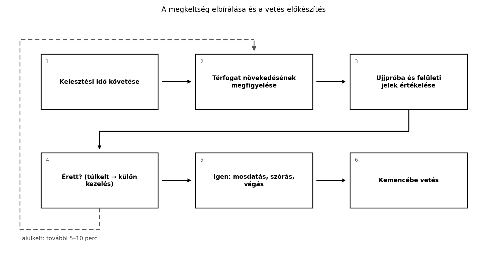

Ebben az alfejezetben azt tanulod meg, hogyan ismered fel a tészta megkelt állapotát, hogyan kerülöd el a leggyakoribb kelesztési hibákat, és milyen műveleteket végezz a tészta felületén a kemencébe vetés előtt. A kelesztés a tészta „pihenő, de dolgozó” szakasza: a sütőélesztő szén-dioxidot termel, a sikérháló nyúlik, a termék alakja kiépül. Ha rosszkor veted be a tésztát, a legjobb receptúra és dagasztás ellenére is hibás, kis térfogatú vagy összeesett termék készül. Ezért a megkeltség megítélése nem „ránézésre megy”, hanem tanulható érzékszervi és mérési jeleken alapul.
Az alábbi folyamatábra azt mutatja, hogy a kelesztési idő követésétől hogyan jutsz el a vetés előtti műveletekig. A döntési pont a megkeltség elbírálása: ha a tészta alulkelt, még várni kell; ha túlkelt, már nem lehet teljes értékűen korrigálni; ha érett, jöhet a vetés-előkészítés.

A valóságban a döntés nem mindig egyszerű igen/nem: a tészta érése folyamatos, és a gyakorlat segít a határértékek felismerésében.
Definíció. A tészta akkor megkelt, ha az erjedés során keletkező szén-dioxid hatására a térfogata a kívánt mértékben megnőtt, a sikérháló rugalmasan nyúlik, a felülete feszes és enyhén matt, és a tészta még megtartja alakját, de ujjnyomásra lassú, részleges visszaugrást mutat.
A megkeltség megítéléséhez egyszerre több jelet érdemes figyelni:
Térfogat-növekedés. A kelesztés elején a tészta térfogata fokozatosan nő; a kívánt megkelt állapot általában a kiindulási (feladási) térfogat 1,5–2-szerese. Ez a szám termék- és tésztafüggő: a lágyabb, nagyobb TA-jú tészta jobban nőhet, a merevebb kevésbé. Pontos értéket az üzemi technológiai lap ad meg (ellenőrizendő: üzemi technológiai lap). A térfogat-növekedést nemcsak szemmel, hanem a kelesztőkocsiban a tészta magasságának mérésével is követhetjük.
Ujjpróba. A legelterjedtebb gyakorlati módszer. Enyhén olajozott, lisztezett vagy száraz ujjal benyomjuk a tészta felületét kb. 1 cm mélyen, majd elengedjük.
Felületi jelek. Az érett tészta felülete feszes, rugalmas tapintású, enyhén matt, nem ragadós. Ha a felület zsírosan csillog, az inkább a túl hosszú vagy túl nedves kelesztés jele lehet; ha száraz, repedezett, az bőrösödést jelez.
Illat és gyenge savanykás szag. A frissen megkelt tészta kellemes, enyhén élesztős, esetleg enyhén savanykás (kovászos tészta esetén kifejezetten savanykás) illatú. A túlkelt tészta erősen alkoholos vagy savanyú szagú lesz, ami az erjedési melléktermékek felszaporodására utal.
Továbbvitt eredmény. A fenti jelek felismerése közvetlenül használatos a Kemencefelfűtés, vetés, sütési sorrend és gőzölés alfejezetben, ahol a vetés előtti utolsó ellenőrzést végzed, valamint a termékfejezetekben, például a Vizes tészta és vizes tésztából készült péksütemények és a Finom pékáruk kelesztése, sütése és befejező műveletei alfejezetekben.
Megjegyzés. Az ujjpróbát mindig a tészta oldalsó, kevésbé látható részén végezd, mert a benyomás nyomot hagyhat. Lisztdús tészta esetén az ujj enyhe lisztezése megakadályozza a ragadást, de ne használj túl sok lisztet, mert az befolyásolja a felületi képet.
Az ujjpróba három kimenetét és az ezekből várható sült terméket az alábbi ábra oszloponként mutatja. Az első sorban a lisztezett ujj kb. 1 cm mélyen benyomja a felületet; a második sor az elengedés után 2–3 másodperccel látható képet mutatja: alulkelt tésztában (a) a mélyedés gyorsan kisimul, érettben (b) kis mélyedés marad, túlkeltben (c) a mélyedés megmarad, és a felület beesik. A harmadik sor a következményt mutatja: (a) kicsi, tömör, oldalán repedt; (b) szabályos térfogatú, nyílt vágású; (c) lapos, szétterült, nagy lyukú bélzetű termék.
A próba ítélete mindig a középső sorban dől el: nem a benyomás, hanem a visszaugrás sebessége és mértéke a jel. Mivel a (c) állapot teljes értékűen már nem javítható, kétség esetén inkább az ujjpróbát ismételd meg rövid időközönként, mint hogy a tészta túlérjen. A HTML-kiadásban a három állapot egymás után lejátszható.
A kelesztési hibák a termékminőséget leginkább rontó tényezők közé tartoznak. Az alábbiakban a négy leggyakoribb hibacsoportot tárgyaljuk.
Definíció. Alulkelesztésről beszélünk, ha a tészta a vetés pillanatában nem érte el a megfelelő gázfejlődést és lazultságot; a térfogata kisebb, a sikérhálója még feszes, rugalmasan húz vissza.
Tünetek sütés után: - A késztermék térfogata a várhatónál kisebb, a béle túl tömör, kevésbé lyukacsos. - A héj a maradék cukor miatt sötétebb, gyakran oldalt szakadozott (a kemencében a tészta hirtelen, szabálytalanul reped). - Az íz kevésbé érett, a termék belseje nedvesnek, „nyersnek” tűnhet, mert a sütőben nem tud egyenletesen átsülni a túl tömör szerkezet.
Okok: túl rövid kelesztési idő, alacsony kelesztési hőmérséklet, túl kevés élesztő, túl erős sóhatás, túl hideg tészta, esetleg túl erős liszt.
Megelőzés: a technológiai lap szerinti idő és hőmérséklet betartása, az ujjpróba elvégzése, a térfogat figyelése. Ha a tészta alulkelt, és a sütési sor indul, lehetőség szerint várj tovább, vagy tedd melegebb kelesztőkamrába.
Definíció. Túlkelesztésről beszélünk, ha a tészta a kelés csúcspontja után tovább áll, a sikérháló elgyengül, a gázcellák összeolvadnak, a tészta összeesik vagy szétfolyik.
Tünetek sütés után: - A termék lapos, szétterült, formátlan, a héja vékony, színe egyenetlen. - A bélzetben nagy, összeolvadt lyukak, üregek vannak, a béle szakadékony, morzsalékos. - A héj sápadt, fakó, mert az erjeszthető cukor elfogyott. - Az íz savanykás vagy alkoholos, az aroma élesztőssé válik. - A késztermék gyorsan öregszik, mert a szerkezet sérült.
Okok: túl hosszú kelesztési idő, túl magas hőmérséklet, túl sok élesztő vagy kovász, túl gyenge liszt, túl lágy tészta.
Megelőzés: az idő és hőmérséklet pontos betartása, a tészta folyamatos figyelése, a kelesztőkamrában riasztó vagy időzítő használata. Túlkelt tésztát nem lehet teljes értékűvé visszaalakítani; legfeljebb kisebb termékké (pl. laposkenyér) süthető, vagy másodlagos felhasználásra (pl. morzsa) mehet. A túlkelt tésztát ne próbáld ugyanabban a formában menteni: élesztő hozzáadásával sem tűnnek el az erjedési melléktermékek (sav, alkohol). Kis mennyiségben, a technológiai lap szerint visszadolgozható friss tésztába (régi tészta, pl. legfeljebb néhány %; ellenőrizendő: üzemi technológiai lap), különben lapos termékként sül ki vagy selejt.
Definíció. Bőrösödésnek nevezzük, ha a kelesztés alatt a tészta felülete kiszárad, és rugalmatlan, kemény „bőrt” képez. Ez megakadályozza a tészta egyenletes emelkedését, mert a felület nem tud nyúlni.
Tünetek: - A tészta felülete száraz, repedezett, matt, tapintásra kemény. - A sütés során a bőrös felület megakadályozza a szabályos tágulást, a termék felreped vagy szabálytalan alakú lesz. - A héj egyenetlenül vastag, a bélzet tömör.
Okok: alacsony páratartalom a kelesztőtérben, túl hosszú kelesztés lefedés nélkül, esetleg légmozgás (ventilátor) közvetlenül a tésztán.
Megelőzés: a kelesztőkamrában 70–85% relatív páratartalom biztosítása (ellenőrizendő: üzemi technológiai lap), a tészta letakarása fóliával vagy nedves textillel, ha nincs páraszabályozás, és a kelesztési idő csökkentése. Enyhe bőrösödés esetén a felület vízzel való bepermetezése vagy tojásozás segíthet, de a kemény bőrű tésztát már ne próbáld megmenteni.
Definíció. Kifolyásról beszélünk, ha a formázott tészta a kelesztés alatt elveszíti alakját, szétterül, a vége vagy a teljes darab kilapul, a formaminták eltűnnek.
Tünetek: - A kifli, zsemle, kalácsfonat alakja elmosódik, a tészta szétfolyik a sütőlemezen. - A bevagdosott minták nem maradnak meg. - Sütés után a termék lapos, széles, a kéreg gyakran sötétebb a szétterült felület miatt.
Okok: - Túlkelesztés (a leggyakoribb ok). - Túl gyenge liszt vagy alacsony sikértartalom. - Túl magas TA, azaz túl lágy tészta. - Nem megfelelő alakítás (pl. nem zárták le rendesen a tészta nyílását). - Túl alacsony pihentetési idő az alakítás után, ami miatt a sikér nem lazult meg, és a darab reped, szétnyílik.
Megelőzés: a liszt minőségének és a TA-nak az összehangolása a termékkel, a kelesztési idő pontos betartása, a formázási műveletek hibáinak javítása. Ha a tészta érzékeny a kifolyásra, csökkenthető a kelesztési idő, vagy növelhető a tészta szilárdsága (pl. kevesebb víz, több sikér).
A vetés-előkészítés célja, hogy a megformázott, megkelt tésztadarabokat a sütéshez megfelelően előkészítsd: a felületet nedvesítsd, ragasztsd, bevond, mintázd, vagy szórd. Ezek a műveletek nemcsak a küllemet, hanem a hőátadást, a gőzelvezetést és a héj kialakulását is befolyásolják.
A mosdatás a tészta felületének vízzel való lekenése vagy bepermetezése. Célja, hogy a héj a sütés elején rugalmas maradjon, a felületi keményedés késleltethető legyen, és a vágások szabályosan nyíljanak. A mosdatás különösen kenyérféléknél fontos, ahol a kemencében adott gőz mellett is segíti a fényes, vékony héj kialakulását.
A vágás (vagy bemetszés) éles pengével, késsel, borotvával vagy célzott vágóeszközzel ejtett sekély, irányított bevágás a tészta felületén. Célja, hogy a sütés első szakaszában fellépő hőtágulás és gáznyomás a vágott vonalak mentén engedje el a feszültséget, így a termék nem reped el szabálytalanul.
A szórás a tészta felületére juttatott száraz anyag: liszt, magvak (szezámmag, lenmag, mák, tökmag), zabpehely, durva só, köménymag vagy fűszerkeverék. Célja a díszítés, az íz, a ropogós textúra és a megkülönböztethetőség.
A tojásozás a tészta felületének egész felvert tojással (vagy tojássárgájával, esetleg tojás+vízzel) való lekenése. Célja a fényes, aranysárga, vékony héj kialakítása, és a szóróanyagok tapadásának növelése.
Valós eset. Egy tanuló pékségben a vizes zsemlék kelesztése után a darabok szétterültek a lemezen, és a vágás helyén a tészta kifordult. A sütésből kikerülő termék lapos, a héja szakadt, a bélzete rendetlen lyukú volt. A technológiai lap szerint a kelesztési idő 45 perc, 32 °C-on, a kelesztőkamra relatív páratartalma 75% volt. A mérés során kiderült, hogy a kamra hőmérséklete 36 °C volt, és a kelesztési idő 50 percre nyúlt, mert a következő műszak késett.
Hiba oka. A túl magas kelesztési hőmérséklet és az elhúzódott kelesztési idő túlkelesztést okozott. A tészta sikérváza elgyengült, a gázcellák összeolvadtak, a formázásból eredő feszültség feloldódott, ezért a darabok szétterültek. A vágás helyén a felületi feszültség megszűnt, és a bemetszett él kifordult.
Javítás. A hibás tételt nem lehetett eredeti formájára visszaállítani. A legjobb felhasználás a lapos péksüteményként való kisütés volt, de a tanulság a megelőzés: a kelesztőkamra hőmérséklet-szabályozását ellenőrizni kell, és a műszakváltásnál a félkész tészták állapotát rögzíteni. A túlkelt tészták vetését a lehető legkorábban el kell végezni, vagy a tésztát hűtött tárolással korrigálni, ha a késedelem előre látható.
Megelőzés. A kelesztőkamrák rendszeres kalibrálása, a tészták folyamatos figyelése, és az ujjpróba elvégzése a tervezett vetési idő előtt 5–10 perccel.
Az alábbi számozott lista a kelesztés utolsó szakaszának és a vetés-előkészítésnek az ellenőrzőlistája. Ezt kövesse minden tételnél.
Kelesztési idő ellenőrzése. Nézd meg a technológiai lapon előírt időt, és hasonlítsd a tényleges állásidőhöz. Ha eltérés van, jelezd a műszakvezetőnek.
Térfogatvizsgálat. Hasonlítsd a tészta magasságát a kiindulásihoz képest; a kívánt növekedés 1,5–2-szeres (terméktől függően).
Ujjpróba. Lisztezett ujjal nyomd be a tésztát; ha lassan, részben visszaugrik, akkor érett. Ha gyorsan visszaugrik, várj; ha nem ugrik vissza, túlkelt.
Döntés. Alulkelt → további kelesztés 5–10 percig, majd ismételt ellenőrzés. Érett → folytatás az 5. lépéssel. Túlkelt → jelezd, ne vesd be formájában, hanem külön kezeld.
Vetés-előkészítő művelet kiválasztása. A termék jellegétől függően: kenyérnél mosdatás + (szórás) + vágás; vizes zsemlénél mosdatás, igény szerint szórás (tojásozás csak dúsított termékeknél – kalács, briós – vagy ha a technológiai lap előírja; ilyenkor a tojás allergénként jelölendő); kiflinél mosdatás vagy tojásozás, nincs vágás, vagy a vágások száma a receptúra szerint.
Mosdatás. Vizes ecsettel vagy permetezővel vékonyan nedvesítsd a felületet, ne áztasd el.
Tojásozás. Ha a termék tojásozást kér, kend le a felvert tojással egyenletesen, ne csöpögjön le.
Szórás. Szórd rá a magvakat vagy lisztet, miközben a felület még nedves. A felesleget óvatosan ütögesd le.
Vágás. Éles pengével, a vetés előtti utolsó pillanatban, határozott mozdulattal ejtsd a bevágásokat.
Vetés. A tésztát a kemence lapjára, formába vagy sütőlemezre helyezd, ügyelve a megfelelő távolságra.
HACCP. A tojásozás kritikus pont lehet, ha a tojást nem megfelelően kezelik. A héjas tojást hűvös, egyenletes hőmérsékleten kell tárolni (pl. 5–12 °C, ellenőrizendő: NÉBIH-útmutató/HACCP-terv); a pasztőrözött tojáslé tárolási hőmérséklete 0–4 °C (ellenőrizendő: gyártói adatlap), a használatához érdemes ezt választani. A feltört, felvert tojáskeveréket hűtve tárold, és a műszakon belül használd fel; a felhasználási idő a kritikus határ. Monitoring: a tojás hőmérsékletének rendszeres ellenőrzése, a törést követő felhasználási idő betartása. Helyesbítés: a tojáskeveréket szobahőmérsékleten csak rövid ideig szabad tartani (tanulási példa: 30 perc; ellenőrizendő: HACCP-terv), az ennél tovább állt keveréket ki kell dobni.
A megkelt tészta minőségi jellemzői:
A sütés utáni visszacsatolás: a késztermék térfogata, a bélzet lyukacsossága, a héj színe és a forma alapján ellenőrizheted, hogy a kelesztés megfelelt-e.
Az ujjpróbát lisztes kézzel, de túl mélyen végzik. A túl mély nyomás a tésztát rombolhatja, és félrevezető képet ad. Helyes: kb. 1 cm mély, határozott, de óvatos nyomás.
A kelesztési idő helyett csak az órára hagyatkoznak. A hőmérséklet-ingadozás miatt ugyanaz az idő alatt a tészta másképp kelhet. Helyes: mindig az ujjpróbával és a térfogattal is ellenőrizd.
A túlkelt tésztát vízzel lemosva próbálják „feléleszteni”. Ez nem segít, sőt a felületet felázza, a tészta még inkább szétfolyik. Helyes: a hibás tételt külön kezelni; a visszadolgozás csak kis arányban, a technológiai lap szerint lehetséges (lásd fent).
A vetés-előkészítő műveletek során keresztszennyeződést okoznak. Például ugyanazzal az ecsettel kenik a tojásos és a tojásmentes tésztát. Helyes: külön edények, ecsetek, és a tojásos termékek jelölése.
1. feladat (A): Sorold fel a megkeltség három érzékszervi jelét, és magyarázd el röviden az ujjpróbát.
2. feladat (A): Mi a kifolyás, és sorold fel két okát.
3. feladat (B): A pékségben egy kelesztőkamra hőmérséklete a beállított 30 °C helyett 38 °C-ra emelkedett, és a kiflik a kelesztőben 40 perc helyett 60 percet álltak. A tészta szétterült, a vágások kifordultak. Határozd meg, milyen hiba történt, milyen okok vezettek ide, és mi a helyes intézkedés.
4. feladat (B): Egy tétel búzakenyér megkelt állapotban van, az ujjpróba lassú, részleges visszaugrást mutat. A technológiai lap szerint a vetés előtt mosdatást, hosszanti vágást és köménymagos szórást ír elő. Írd le a műveletek helyes sorrendjét, és azt, mire figyelj a higiénia és allergén szempontból.
5. feladat (C): Tegyük fel, hogy a kelesztés során a tészta felülete bőrösödni kezd, de a belső szerkezet még éretlen. Hogyan előzheted meg a bőrösödést, és mit tehetsz a már kialakult enyhe bőr esetén? Indokold, miért nem elég a felületet pusztán leönteni vízzel.
6. feladat (D): A gyakorló pékségben a technológiai lap szerint a zsemlék kelesztési ideje 40 perc, 32 °C, 75% páratartalom. A kamra páratartalma 60%-ra esett, és a tészta felülete száraz, repedezett. A belső ellenőrzés (ujjpróba) szerint a tészta még alulkelt. Határozd meg a hibát, és javasolj korrekciós lépést a tételre és a kamra beállítására. Higiénia. A kézmosás és a tiszta eszközök használata minden döntés előtt kötelező.
Önellenőrzés – válaszok:
1. feladat megoldása: A megkeltség jelei: a térfogat 1,5–2-szeresre nő, a felület feszes és enyhén matt, az ujjpróba lassú, részleges visszaugrást mutat. Az ujjpróba: benyomjuk a tésztát ~1 cm mélyen, majd elengedjük; az alul/érett/túlkelt besorolás a visszaugrás sebességéből történik.
2. feladat megoldása: Kifolyás az, amikor a formázott tészta a kelesztés vagy sütés során elveszíti alakját, szétterül. Két ok: túlkelesztés, túl gyenge liszt vagy túl lágy tészta (magas TA).
3. feladat megoldása: Túlkelesztés történt. Okok: a kamra hőmérséklete 30 °C helyett 38 °C volt, ami felgyorsította az erjedést; a kelesztési idő 60 percre nőtt, ami a megengedettnél több. Intézkedés: a hibás tételt külön kezelni (pl. lapos termékként kisütni vagy selejtezni); a kamra hőmérséklet-szabályozását azonnal ellenőrizni, kalibrálni; a jövőben a kelesztési időt a tészta állapota alapján is monitorozni.
4. feladat megoldása: Sorrend: mosdatás (víz permetezés) → szórás köménymaggal (a nedves felületre) → vágás (éles pengével, közvetlenül vetés előtt). Higiénia: tiszta ecset, tiszta szóróedény, kézmosás. Allergén: a köménymag nem fő allergén, de ha szennyeződik más maggal, jelezni kell; az eszközök elkülönítése.
5. feladat megoldása: A bőrösödés megelőzhető a páratartalom 70–85%-ra emelésével, a tészta letakarásával, a huzat megszüntetésével. Már kialakult enyhe bőr esetén a felületet vízzel bepermetezhetjük, de ez csak ideiglenes; ha a bőr vastag, a tészta nem kel tovább egyenletesen. A vízzel való leöntés nem oldja fel a már megszáradt sikérréteget, és a túlzott víz a tésztát eláztatja, ami kifolyáshoz vezethet.
6. feladat megoldása: A hiba: a kamra páratartalma 60%-ra csökkent, ami bőrösödést okozott, miközben a belső érettség még nem megfelelő (alulkelt). Korrekció: a kamra páratartalmát emelni 75% környékére; a tételt vízzel enyhén bepermetezni, és további kelesztést adni 5–10 percre, majd újra ellenőrizni. Ha a bőr már kemény, a tételt külön kezelni. Higiénia: a permetezés előtt kézmosás, tiszta eszközök.
A megkeltség megállapításának alapja az ujjpróba és a térfogat-változás megfigyelése. Az érett tészta térfogata a kiindulási 1,5–2-szerese, felülete feszes, enyhén matt, ujjnyomásra lassan, részben visszaugrik. Az alulkelt tészta kisebb térfogatú, tömör bélű, sötétebb és oldalt szakadozó héjú lesz; a túlkelt tészta szétfolyik, nagy lyukú, sápadt héjú, savanykás ízű. A bőrösödés a felület kiszáradásából adódik (alacsony páratartalom, huzat), a kifolyás a túlkelesztésre, gyenge lisztre vagy lágy tésztára utal. Vetés előtt a tésztát mosdatjuk, tojásozzuk, szórjuk, majd vágjuk; ezek során a higiéniai, allergén- és nyers tojásból eredő mikrobiológiai kockázatokat ellenőrizni kell. A vetés-előkészítő műveletek közvetlenül befolyásolják a héj színét, a repedésképet és a termék alakját. Ezt az alfejezetet használjuk a Kemencefelfűtés, vetés, sütési sorrend és gőzölés, a Késleltetett és megszakított kelesztés, a kelesztés szervezése és a termékfejezetek, például a Vizes tészta és vizes tésztából készült péksütemények, a Finom pékáruk kelesztése, sütése és befejező műveletei során. A kelesztőkamra paramétereit (hőmérséklet, páratartalom, idő) mindig az üzemi technológiai laphoz igazítsd, és a kritikus határértékeket a HACCP-terv szerint ellenőrizd.